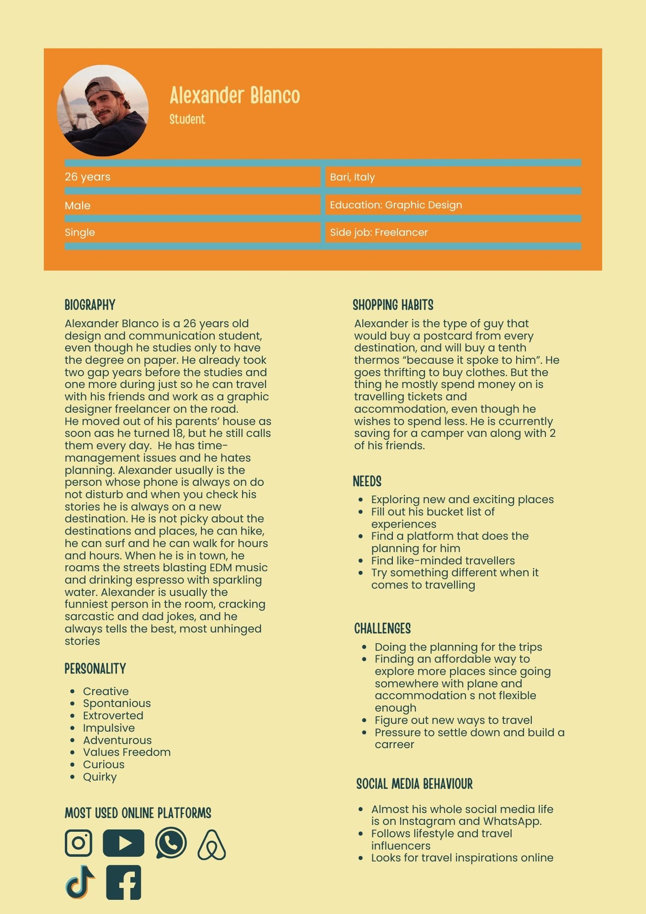
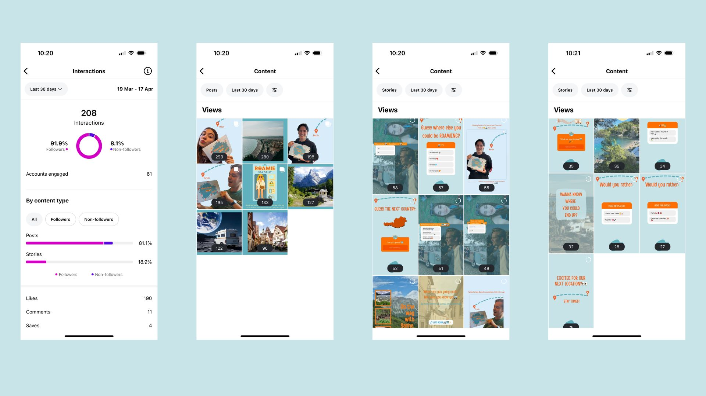
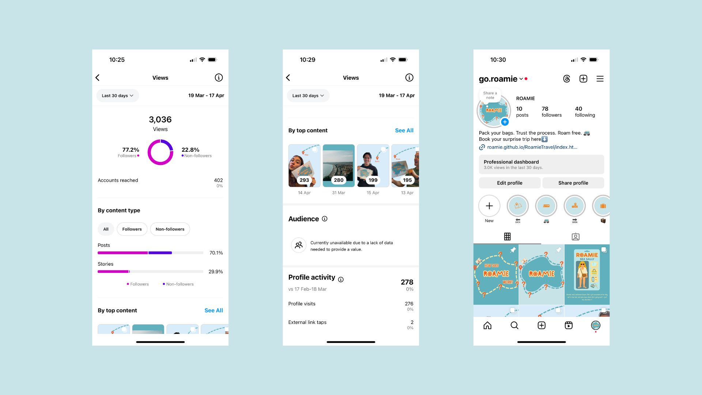
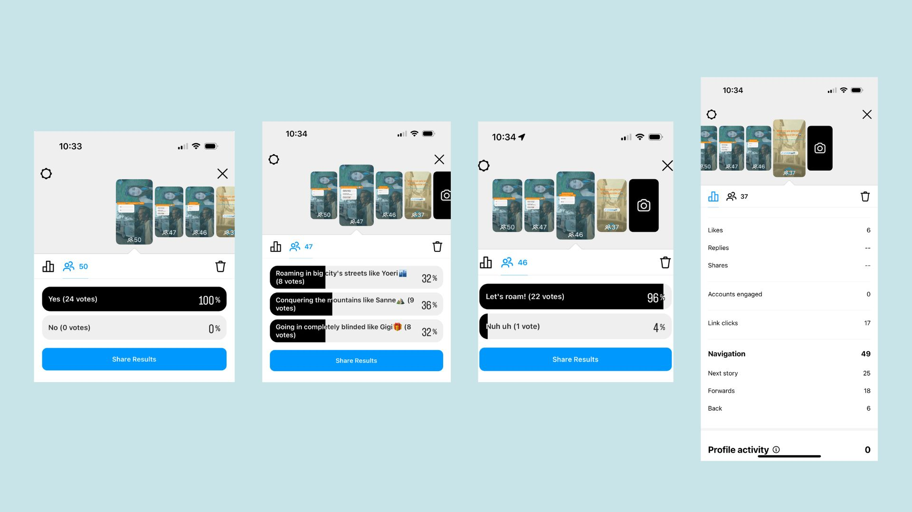
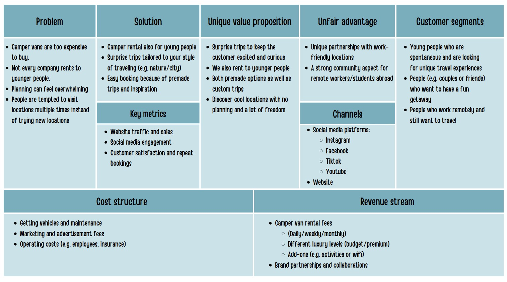

General Information
This branded website is publicly available at https://roamie.github.io/RoamieTravel/
This website was created by the team of Roamie Travel:
- Yoeri Bouman [234983]
- Sanne van Lierop [231299]
- Gergana Ivanova [230485]
Content
| # | Student ID | Value | Name and link of content |
|---|---|---|---|
| 1. | 234983 | UX copywriting Brand vision |
Content title |
| 2. | 231299 | UX copywriting Values |
About us page |
| 3. | 230485 | Social media copywriting Brand persona |
Social Media Copywriting |
Roamie: the name comes from the expression “Roam Free” which aligns with our values and target group as we aim at adventurous, curious people who seek freedom and new experiences. Moreover, we want to give out the feeling that our brand is the friend that plans the trip and you just “roam” with them in that sense it gives out the friendly feeling and we become the customers’ travel buddy. “Roamie” is a word that is unique, but it is also catchy and easy to remember, as mentioned “Roam” comes from “Roam Free” and it is easy to do wordplay, and the “-ie” gives out the friendly, non-corporate feeling that our target audience would seek.
The logo is simply our brand name with a playful, yet professional font, and a wheel on the “o” to highlight the camper van theme.

Vision: "In a world where organizing travels can be overwhelming, we believe in creating ready-to-go experiences filled with surprise, adventure, and curiosity. By sending young travelers on unforgettable campervan journeys, where each stop is revealed along the way, we turn every trip into a story worth telling. Because only then does travel become a true journey of self-discovery and meaningful moments."
Brand Values:
Adventure - We believe adventure doesn't need an itinerary. At Roamie, we embrace the unknown because that's where the magic happens.
Freedom - Roam free, take a fresh deep breath and chase the road.
Curiosity - Because of the question “Where do we roam next?”, we will answer with detours, delightful twists, and destinations you didn't see coming (literally).
Experience - This won't be just a trip. It will be a story that will become your whole personality for years.
Excitement - We believe that you shouldn't plan the thrill. That's why we will do it for you!
Brand Persona:
Production
Design Elements
Please provide a list of design elements alongside their justifications:
-
A colour scheme (with HTML colour codes, which must be consistent with your final website)
— see the example below from the BUas brand book:
- #EF8928 Justification
- #F4E9AC Justification
- #FFFFFF Standard white is used selectively for elements like cards and containers to create separation and contrast while keeping the overall design clean and minimalist.
- #C9E4E9 A soft pastel blue that evokes calmness, freedom, and trust — aligning with Roamie’s promise of a stress-free, adventurous experience. It brings a playful and modern feel to the interface, making it inviting for young travelers.
- #60B0BE A strong, confident teal-blue used for interactive elements like buttons and highlights. It helps draw attention to key calls-to-action (e.g., “Book Your Adventure”), adding energy and encouraging engagement while staying professional and trustworthy.
- ##1E4248 A dark, nearly black gray chosen for all body text to ensure maximum readability on light backgrounds. It’s slightly softer than pure black, reducing visual strain for users while maintaining strong contrast.
- FONT CHOICES
Headings: The headings use Poppins, a geometric sans-serif font that feels modern, bold, and highly legible. Its clean lines suit a digital interface and add a youthful, energetic tone fitting for Roamie’s 20–30 year-old target audience.
Body Text: Also Poppins, but in regular/lighter weights to ensure a smooth and consistent visual flow. This keeps the brand identity strong while making content easy to read on all screen sizes. - USER INTERFACE PATTERNS
Grid System: The layout is based on a 12-column responsive grid, allowing for clean alignment and a structured layout on all screen sizes. Typically, Roamie uses 2–4 columns for balance and readability.
Cards: Custom card components are used to present trip destinations and testimonials. These are visually unified with white/light backgrounds and rounded corners, providing a polished look while keeping information digestible.
Carousel: The review section uses a simple radio-button carousel that lets users browse testimonials. This interaction adds motion and life to the website without relying on heavy scripting.
Navigation Bar: A responsive top navigation with a hamburger toggle on mobile devices ensures usability and access to all sections. Clear labeling like “How It Works” and “Book a Trip” enhances user orientation.
Hero Section: A background image hero banner welcomes users with a bold, motivational tagline. It creates an emotional hook right from the start.
CTA Buttons: Buttons are styled with the accent color (#EF8928) to stand out, with rounded edges and clear text. This makes them inviting and accessible while ensuring consistency with the overall color palette. - Roamie’s website is designed with simplicity, clarity, and curiosity at its core. To support our surprise travel concept and make it accessible for users aged 20–40, we structured the website across five main pages: Home, How It Works, Book a Trip, About Roamie, and Contact Us. Home / Landing Page The homepage guides users through the Roamie experience in a clean, scrollable flow. Each section has a clear purpose and visual hierarchy, ensuring users stay curious and engaged as they move down the page. • Hero Section: A strong, playful intro with a clear headline and a Call to Action button encouraging users to start their surprise journey. This section uses the F-pattern for layout, aligning with how users typically scan pages. • How It Works Preview: A short visual walkthrough of the trip process — from telling us your vibe to getting surprised with a personalized adventure. This preview links to the full How It Works page for users who want more detail. • Previous Trips: A showcase of a few example trips (real or conceptual), offering a peek into the kinds of adventures users can expect. These are displayed in card format with quick visuals and short descriptions to build excitement. • Reviews Section: User reviews help build trust and show the positive experiences of past Roamie travelers. Reviews are styled with clean text and profile icons for authenticity and credibility. • Contact Us Teaser: The final section invites users to reach out with questions, featuring a simple contact form and links to social media. It keeps the conversation open without overwhelming the user. How It Works Page This page goes deeper into the Roamie journey, using a visual step-by-step layout to explain the surprise trip process. Bold headings, icons, and a playful tone keep it friendly and digestible. Book a Trip Page A straightforward form where users can begin their Roamie adventure. The design is clean and minimal, reducing friction and guiding users through key input fields like travel dates and preferences. About Roamie Page This section shares Roamie's story — who we are, what inspired us, and what we stand for. It adds personality and builds a connection with our audience. Contact Page A dedicated place for users to ask questions, share feedback, or get in touch. The form is compact, and we provide clear info on how and when we'll respond.
- All these elements must be justified by referring to the theory and/or vocabulary of design
- Please relate these elements to other units, for example:
- How does website design fit the values and personality of the brand?
- How does website design fit the marketing and communication strategy?
- How does website design help showcase the unique value proposal of the product?
Credits
Please provide links and/or credits for third-party elements including:
- HTML templates if these are different from this one (buas-media-interactive/prj4-group-template)
- The source code for UX patterns other than the ones provided by the “Bootstrap” library (see getbootstrap.com/docs for a list of such patterns)
- All images used on this website that are not otherwise credited were created by our team.
- Hero Section Background "Photo by Nick Dunlap from Unsplash."
Testing Report
Please write about…
- Your testing goals – in other words, what you are trying to learn about your website?
- Your testing methods, which includes information about:
- The test’s participants (number, match with target audience, etc.)
- The test’s setting (which material is used, is it done remotely, on campus, at home, etc.)
- The test’s protocol (what instructions are given, how it is recorded, etc.)
- Your testing results, which includes information about:
- Positive and negative aspects of the UI/UX that have been identified, ranked by importance.
- Improvements that have been implemented on the final website (or that would be implemented if doing so would be too complex)
Marketing
Context of campaign and promotional activities
In the period between the 26th of March 2024 and the 16th of April 2025, our team created and executed a campaign for the brand “Roamie”. We wanted to communicate with the audience about the existence of a website for the surprise campervan trip brand, provide information, build trust and start building a community by posting engaging content. The portrayal we wanted was of adventure, curiosity and freedom. The brand was made to feel like the funny friend, who you go on trips with and plans everything and you just give the money and show up and we wanted to communicate this in order to make the users trust us.
The marketing campaign was solely executed in social media and we used Instagram as our channel as it is the platform that our GenZ and Millennials use the most. Moreover, it aligns with the visual nature of the Roamie brand as we could show pictures from destination and it would be the easiest to connect with our audience since there are a lot more ways to interact on Instagram than any other social media platform, such as stories, posts, polls, carousels and interactive stickers, which allows us to have a two-way communication with our audience.
Instagram @go.roamieWe set three main objectives.
Our first and main goal is to create engagement since we want to connect with our audience. We want to engage 50 accounts and have 150 interactions by April 16th. This can be measured by likes, comments and saves. To accomplish this we will create interactive content such as polls, games and questionnaires on stories, and funny, but informative posts with catchy captions. Our tone of voice is quirky, catchy, slightly sarcastic, but still informative as this appeals to GenZ and Millennials, as well as adventurous people.
Our second marketing objective is to reach 300 accounts and have 1500 views on Instagram within the first 3 weeks. We do not aim higher as we know that we have a niche target audience that would be challenging to reach, especially since it is not too likely to be exposed to new accounts on Instagram as it is on TikTok for example. We want to focus on building trust through testimonial posts and creating content that makes our audience look forward to booking a trip.
Our third goal is to communicate with our audience as we want them to trust our brand and concept, be curious and inspired to go on adventure and move the traffic to our website with 30 views by the end of the third week of the launch. To measure that we plan on creating content during the campaign run that shows stories from at least 2 previous travellers, and post 2+ polls on stories to check how the audience feel and if they would engage with our brand.
By the first month we succeeded with our goal as we engaged 61 accounts and had 208 interactions with our content as of 18th April. To achieve that we made a content calendar which we executed by regularly posting a series of interactive stories, such as “Would you rather” games, polls, quizzes, and catchy posts. The results show that we are already building a name, interest and connection with our audience.
 Content CalendarAs of today 18th April we have reached 402 accounts and have 3 000 views, which is only two days after the end of the campaign. We believe the good results came from the friendly and quirky tone, and the values of our brand as we focused on building trust through testimonial posts and creating content that made our audience look forward to the next possible destinations. Each post was tailored to our audience’s interests and shared in a tone they resonate with: fun, adventurous, and unpredictable — just like our trips. Moreover, we posted during peak hours and we used hashtags to boost the discoverability and we shared the stories of real people that shared with their friends and got us more views and reach.
In order to build trust and make our audience curious, we created a testimonial collection of posts called “Roamie Riders” that shared previous experiences of clients. We showed them different types of journey and we decided to create additional fun and possibly informative content on stories, such as “What did … pack for an urban trip?” so the audience could be informed. With this series of posts we created trust by showing real stories from real travellers and we created personal connection and sense of community with the additional stories. “Roamie Riders” posts became the most liked posts on our page and after the wrap of the series we created polls where we could see the interest and curiosity of our audience. A poll that we posted on our story after the conclusion of the Roamie Riders' series showed that 24 people enjoyed the series, that people are equally interested in mountain, urban and surprise trips and that 22 people would “roam with us”, which means that they are interested! As for the website traffic we had to change our objective since we launched the website only on the last day of the campaign, so from 17th of April. Therefore, we had to change our objective to 10 views on our website. After promoting the website on the story of the Roamie Instagram account via link. It was surprising and fortunate that 17 people clicked the link, which means that people are interested and have been through our website.
In conclusion, we achieved our goals and we are happy with the results. We managed to create engagement and build trust with our audience, which is the most important thing for us. We are looking forward to continuing the campaign and building a community around Roamie.
Learning Points
One of the biggest challenges we faced was the consistent posting on social media. Even though we made a social media calendar it was very hard to keep up, especially because there were so many other things to be done, such as the website, management and other projects. Moreover, we had limited human resources since we were only three members in the group, which made keeping up with the marketing campaign and socials difficult. In the future, we would schedule one hour per week when the group would sit down and create the content for the week.
Another learning point that had us concerned had to do with keeping up with the style guide and realising too late that changes had to be made. A few examples are the colors and the fonts. When we started we made a color palette that we readjusted a couple of times because we saw that there was not enough contrast and sometimes it was hard to read. What we learned and will use in the future is to test it out on prototypes in order to find the perfect match. As for the font, at first we used a Canva font because we made everything in this application, however we realised that first of all it would not work out in the website so we had to find a similar font to use in our stories and posts, and later to use with coding. However, the font was slightly different, but for social media it did not make a big problem because we fixed that in an early stage.Therefore, I can say that we learned from our mistakes in the process and we fixed it when we had a chance.
Talking about aligning the website to social media and even just the main concerns, we faced a few challenges - finding the balance between being funny and quirky, and still being professional, and implementing the elements we used on social media in the website. As mentioned, we went for a friendly, funny and a little bit sarcastic tone of voice, but we also wanted to keep the professional feel of the brand. We figured out that the perfect middle ground is to be informative, while still making some small jokes, which can be seen in the copywriting style. We took inspiration from other brands, whose quirky tone of voice still provides information and engages even with the boring things, such as Oatly. We dare to say that we found the balance in the end despite feeling unsure at the beginning . As for the elements, they worked out very well in the social media as they are pretty visually stimulating, but we are still trying to figure out how to implement them in the website. I think the learning point here is that it is not mandatory to include all the elements the same exact way but we can still give out the vibe we want to go for with accessible features, elements and UI patterns.
Some concerns, challenges and failures we had have to do with the content we want to post and the response of the audience. We wanted to post some reels and more testimonial posts, however, we were limited because the brand requires content that is hard to acquire when we do not actually have a van in order to film videos. We could go for stock footage and our personal videos but they did not align with the brand image as the available stock footage looked unnatural and we wanted to build trust and reliability, which we also achieved without posting images. What we could’ve also gone for is trendy challenges that do not require van footage, but we decided that this won’t fit the communication goals for building trust and community feeling, even though it would probably achieve more reach and engagement. Time and schedule limitations also played a role in not executing the possible reels ideas. As mentioned this could be fixed if we madea time slot for generating content, but that could work for future plans. The lack of interactions on posts,polls and quizzes was concerning in the beginning, however, this was expected and consistency proved itself and we got a lot more responses as we learned that polls work better than question stickers and we improved a lot as we got only 2 responses in the first poll but 24 in the last posted one.
In conclusion, we managed to work through the challenges and concerns, and we learned how we could have avoided the failures and we also saw the justifications and bright side of them. This is a great learning point for the future and we will make sure to implement them on follow-up projects and campaigns.
Future Planning
What we did was make two series of posts “Roam Revealed” and”Roamie Riders”. The first one was such that we revealed the possible places people could end up with our service. We gave hints on our stories, such as “Tap to reveal”, “Guess the next country based on the flag” and “Guess the next country” and afterward we made a grid filling posts on Instagram with catchy captions. Moreover, we made an April Fools post because it was in character with our brand. These stories were a way of giving some hints and clarity to our audience as well as have a chance to introduce them to the brand personality and interact with them. With time we got more and more engagement on our content and that really showed with the “Roamie Riders” series, where we shared the experience of previous travellers and this was we also showed the audience the different types of surprise trips that our brand offers - mountain, sea, urban and complete surprise. On these posts we got the most engagement and we also posted stories connected to our “Roamie Riders” such as “What did …. pack for his surprise urban trip?”, “What was ….. playlist?”, “On the way with…”, by these stories we tried to create a sense of community and belonging, we also wanted to be informative as we showed what they could pack and what they could see on the way. The last post was the trendy “Starter pack dolls” where we once again showed the different journey types and also what are the essentials for those types. We again added some humour in the captions.
These posts proved that people liked posts that show the brand personality, share real experiences and inform. However, we also learned that Instagram’s discoverability is limited compared to other platforms like TikTok, where content is more easily picked up by the algorithm and pushed to new audiences. We also discovered that Facebook is the platform where communities thrive in groups and blogs.
Therefore, for future campaigns we would like to expand in TikTok and Facebook. TikTok is the perfect platform for boosting visibility for short storytelling and the generation Z mostly uses this platform to watch short and funny videos, which aligns with our tone of voice and wanting to expand our reach to GenZ perfectly. We could post mini-vlogs from different trips with testimonials and doing different trends. Moreover, Facebook would be the way to approach the elder millennial audience and we could make a Facebook “Roamie” group, where people could share their experiences, meet each other, foster community and share tips. We plan on partnering with travel influencers in the future so we could be more visible and have more testimonials and filmed experiences. The platforms we would like to use for this purpose are Instagram with reshared stories and collaborative posts, TikTok with short videos from the UGC and YouTube with vlogs. Our other plan is to include an option to the package for “discount” or “paid reward” if the customers agree to generate a specific amount of content for us, but this is still to be discussed. This way there is an exchange reward both for us and the customers as they get paid and we get popularization. What we would do differently in the future is rely more on user generated content as this shows authenticity and reliability. We would also create more video content.
Professionalism
Management
Lean Canvas
Problem
Initially after the problem interviews, the main problems that became clear were that buying camper vans is just way too expensive and that renting camper vans at a younger age is quite inaccessible because most companies do not rent to people under the age of 25 or people that have not had their drivers license for more than 5 years. Another problem was that it can be stressful to organise camper van trips, because there is quite a lot to think of. There are some existing solutions already. Companies rent out their camper vans instead or in addition to selling them (even though renting is becoming more expensive as well). There are companies that rent out camper vans under the age of 25, but those are rare and often use exceptions so that students or undergraduates are not allowed to rent due to financial risks. When it comes to the hassle and stress of organising trips, there are already some companies that organise premade or surprise trips.
Solution
The gap that we found is that even though there are companies that organise premade and surprise trips by car or by plane, there are almost no companies that actually rent out the camper vans with these trips. So that is what we decided to focus on. Our solution is Roamie, a camper rental company that offers hassle free surprise trips. You just give your preferences, and we’ll do the rest. The only thing that you have to do is pack your bags and enjoy.
Customer segments
Our target audience exists of people who are 20-40 years old, are spontaneous, and are looking for unique adventures. These also include couples, friend groups, or families who want to have a short, exciting getaway, or take their time to see many countries throughout Europe. For the people who work remotely, Roamie is also a perfect combination to both work and explore beautiful regions. Characteristics of our ideal customer include: adventurous, curious, spontaneous, and always excited to try something new.
Unique value proposition
Roamie offers unique surprise camper van trips to anyone from the age of 20 and up and let’s you choose between a ready-to-go adventure or a custom trip with a lot of freedom but without the stress of planning and choosing locations. Roamie does not sell a product, but an experience.
Unfair advantage
Roamie does not just sell trips, but freedom, surprise, and memories that last forever. Roamie is there for younger people to help them discover the continent and to experience freedom and excitement in a period of their life where stress is not uncommon.
Channels
There are multiple media platforms that fit our audience’s engagement. The channels we chose are Instagram, Youtube, and Facebook to fit both our gen-z and millennial target group. However, for this campaign, we have decided to put our focus on Instagram, since that is the platform that both age groups use very often and is a good platform to measure audience engagement. Of course, our website is also one of the main channels that Roamie will use to engage and offer our product to our audience. On the website people can see more information, book their trip, and get in contact with our team.
Key metrics
We can measure our key metrics with the help of Instagram insights. We have created interactive posts to create engagement and a connection with our target audience. (See marketing section) Our goals were to reach 50 accounts and have 150 interactions over the three weeks time that we actively posted on our feed and stories. We succeeded in this, because in the first three weeks we had engaged with 61 accounts and had 208 interactions in total. We made use of interactive stories with polls such as “would you rather” and quizzes. As of April 18, we have reached 78 followers, reached 402 accounts, and have even reached a total of 3,000 views. We are very pleased with our achievements ant believe that Roamie will really take of with some longer running campaigns.
Revenue streams
Our revenue consists of different revenue streams. We offer camper van trips for which the customer pays for a package including camper rental fees, administrative costs and options for extra add-ons such as activities, and extra utilities and equipment for in the camper van. Besides the revenue from our customers, we also work with other brands, such as outdoor stores and influencers to gain new customers that will buy our product.
Cost structure
Of course, every brand also has costs consisting of fixed and variable costs. Fixed costs: company building, rent, salaries, insurance, purchase of vans, permits such as business license and registration, marketing (social media advertisements, content creation), website hosting, storage to store unused vans or vans that are being repaired. Variable costs: Fuel costs, maintenance and repairs, costs of creating custom trips, depreciation of the vans, cleaning, extra activities or add-ons, 24/7 customer support.
Services/products
Our product is a ready-to-go surprise trip that you make in a camper van. Going on a road trip to places you have never been to before and not knowing what will be next makes up for some really unique memories that you will never forget. It is not all about the destination, but the about the experiences you have along the way. The brand identity is all about having fun, having freedom, and staying curious. With our surprise trips we hope to evoke these emotions, so we tried to incorporate these into our brand design. With bold yet playful elements, we wanted to show that camper trips are not stressful, but fun and exciting.
Validation of Assumptions
Roamie: the name comes from the expression “Roam Free” which aligns with our values and target group as we aim at adventurous, curious people who seek freedom and new experiences. Moreover, we want to give out the feeling that our brand is the friend that plans the trip, and you just roam with them. In that sense it gives out the friendly feeling and we become the customers’ travel buddy. “Roamie” is a word that is unique, but it is also catchy and easy to remember, as mentioned “Roam” comes from “Roam Free” and it is easy to do wordplay, and the -ie gives out the friendly, non-corporate feeling that our target audience would seek. The logo is simply our brand name with a playful, yet professional font, and a wheel on the “o” to highlight the camper van theme. We used warm yellow and orange colors to give off a warm, yet adventurous feeling. Some existing alternatives we looked at were Roadsurfer and Indiecampers, but what we noticed is that they are all very clean. We wanted or brand to stand out with rounded, playful elements, loads of color and fun extras such as the polaroids and the dotted lines throughout the website.
Appendix
In this appendix you will find the audio files to the problem interviews, the solution interviews, and the videos of the testings.